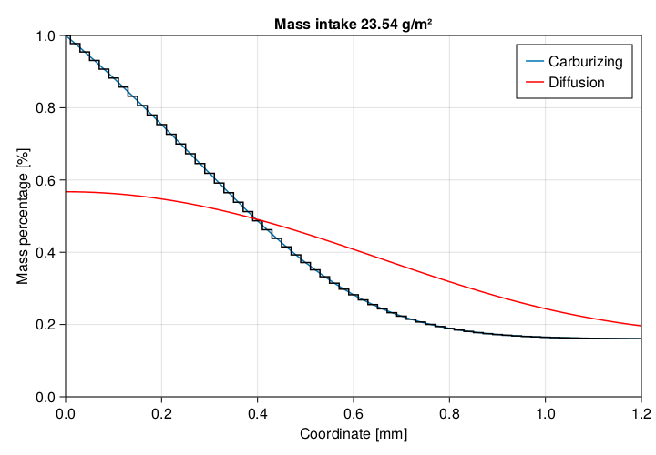

Validation of iron carburizing model
The model hereafter introduced makes use of the diffusion coefficients provided by Slycke and Ericsson [4] [5]. Simulation conditions and results are to be confronted with those provided by Dal'Maz Silva et al. [6].
Common conditions
Some conditions listed below will be shared across the simulations that follow. In the block below we find space discretization and physical conditions for model setup. Solver parameters are irrelevant in what follows and are kept hidden in the setup block (for checking them, please consider consulting the raw documentation files in project repository).
N = 100 # Number of cells
L = 0.002 # Length [m]
T = 1173.15 # Temperature [K]
τ = 50.0 # Characteristic time-step [s]Carburizing of alloy 16NiCrMo13
For alloy 16NiCrMo13 we perform 2 hours of carbon enrichment followed by 3 hours of zero flux (closed system) diffusion.
enrich = 2hour
diffuse = 3hourMass transfer coefficient is then declared as a time function. A high value of 1.0 enforces an almost-Dirichlet boundary condition, while 0.0 closes the system.
h = (t) -> (t < enrich) ? 1.0 : 0.0A wrapper was created to initialize the model and used below. Starting from initial time, we perform the carburizing step. The initial condition is provided through x with the alloy's initial carbon content.
model = getcarburizingmodel(L, N, h, T, yaeros)
t0 = 0.0
t = enrich
x = carburizemasstomolefraction(yaero0)
@time solve(model; t, τ, x, M, α, ε, t0)
res1 = plotsimulationresiduals(model.res[]; showinner = true)[1] 0.029150 seconds (36.35 k allocations: 16.763 MiB, 70.47% compilation time)Below we see the plot of convergence tracking during the solution. Through option showinner = true we see the internal steps residuals. The blue dots represent the end of step residual, all of which fall below the target convergence criterium.
Now we continue the process from final time of carburizing for the whole diffusion interval. Again we inspect the residuals for this step to verify that everything worked as expected.
t0 = t
t = diffuse
x = nothing
@time solve(model; t, τ, x, M, α, ε, t0)
res2 = plotsimulationresiduals(model.res[]; showinner = true)[1] 0.082489 seconds (59.60 k allocations: 23.857 MiB, 41.92% gc time, 42.76% compilation time)If a convergence plot is not really required, this check could be skipped. In fact the solver will issue warnings if any step did not reach internal convergence so no worries.
Below we see the state of the system after both carburizing and homogeneization diffusion steps.
Mass intake approaches the reference value of 23.5 $g\cdotp{}m^{-2}$obtained by diffusion profile integration by Dal'Maz Silva et al. [6].
Carburizing of alloy 23MnCrMo5
For alloy 23MnCrMo5 we perform 2 hours of carbon enrichment followed by 4 hours of zero flux (closed system) diffusion. To make it shorter, all the code is presented in a single block below.
enrich = 2hour
diffuse = 4hour
h = (t) -> (t < enrich) ? 1.0 : 0.0
model = getcarburizingmodel(L, N, h, T, yautos)
t0 = 0.0
t = enrich
x = carburizemasstomolefraction(yauto0)
@time solve(model; t, τ, x, M, α, ε, t0)
t0 = t
t = diffuse
x = nothing
@time solve(model; t, τ, x, M, α, ε, t0)Mass intake does not approache the reference value of 15.3 $g\cdotp{}m^{-2}$obtained by diffusion profile integration by Dal'Maz Silva et al. [6], but that obtained by direct sample mass change of 20.5 $g\cdotp{}m^{-2}$. Because of the lack of experimental reproduction and high uncertainty in measurements, results are considered to be in good agreement.